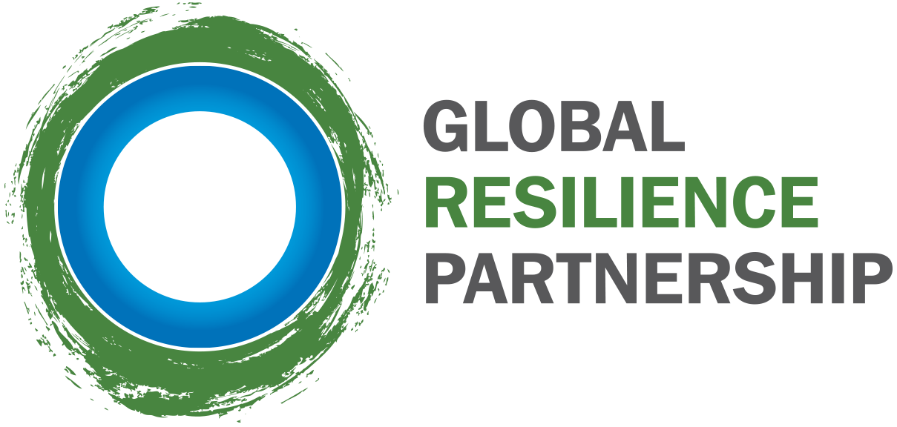

---
---
<html>
<head>
	<title>Global Resilience Partnership</title>
  	<meta charset='UTF-8'/>
    <meta name='viewport' content='width=device-width, initial-scale=1.0, maximum-scale=1.0, user-scalable=no' />
	<link href='https://api.tiles.mapbox.com/mapbox.js/v2.1.0/mapbox.css' rel='stylesheet' />
	<script src="modernizr.js"></script>
	<link href='style.css' rel='stylesheet'/>
	<link rel="shortcut icon" href="img/favicon.ico" type="image/x-icon">
	<link rel="icon" href="img/favicon.ico" type="image/x-icon">
</head>
<body>
    <!--[if lt IE 10]>
    <div class="ie-banner">
    	<p>For best experience of the site, please use a modern browser such as 
        <a href='https://www.google.com/intl/en/chrome/browser/' target='_blank'>Chrome</a> or 
        <a href='http://www.mozilla.org/en-US/firefox/new/' target='_blank'>Firefox</a>.
    </div>
    <![endif]-->
	<div class='intro clearfix'>
		<div class='pop'>
			{% for post in site.categories.intro %}
				<h1>
					<em>{{post.emphasize}}</em></br>
					{{post.content}}
				</h1>
			{% endfor %}
		</div>
		<nav>
			<div data-magellan-expedition="fixed">
				<div align="center">
					<dl class="sub-nav">
						{% for post in site.categories.section reversed %}
							<dd data-magellan-arrival="{{post.short | downcase | split:' ' | join: '-' }}">
							<a href='#{{post.short | downcase | split:' ' | join: '-' }}'>{{post.short}}</a>
							</dd>
						{% endfor %}
					</dl>
				</div>
			</div>
		</nav>
	</div>

	<div class='below-intro'>
		{% for post in site.categories.section reversed %}

		<section class='clearfix {{post.class}}'>
			<a data-magellan-destination='{{post.short | downcase | split:' ' | join: '-' }}' id='{{post.short | downcase | split:' ' | join: '-' }}'></a>
			<!-- logo -->
			{% if post.tags contains 'logo'%}
			<div class='row'>
				<div class='logo'>
					
				</div>
			</div>
			{% endif %}
			<!-- map -->
			{% if post.tags contains 'map'%}
			<div id='map' class='map'></div>
			{% endif %}
			<!-- section content -->
			<div class="row">
				{% if post.tags contains 'map' %}
				<div class='absolute'>
					<h1 class='pop'>{{post.content}}</h1>
				</div>
				{% else %}
				{{post.content}}
				{% endif %}
			</div>
		</section>

		{% endfor %}

		<footer class='row'>
			<div class='medium-3 columns'>
				<h2>Publications</h2>
				<p>For more resilience-related literature, please visit <a href='http://www.rockefellerfoundation.org/blog/publications/32' target='_blank'>our publications</a> and the <a href='http://www.usaid.gov/resilience/resources' target='_blank'>Resilience Resources</a> on USAID's site.</p>
				<p class='email'><strong>Sign up our email list for latest updates.</strong></p>
				{% include mailchimp.html %}</p>
			</div>
			<div class='medium-3 columns'>
				<h2>Credits</h2>
				<p>Photos: <a href='https://www.flickr.com/photos/chucksimmins/2947856660' target='_blank'>Chuck Simmins</a> and <a href='https://www.flickr.com/photos/3oheme/5141328136' target='_blank'>Ignacio Palomo Duarte</a>. 
				Icons: World designed by Juan Pablo Bravo; Explore, Group Talk, Writing, Presentation designed by <a href="http://www.thenounproject.com/takaoumehara">Takao Umehara</a> from the <a href="http://www.thenounproject.com">Noun Project</a></p>
				<p class='website'>Website by <a href='http://developmentseed.org'>Development Seed</a></p>
			</div>
			<div class='medium-3 columns'>
				<h2>Latest Tweets by GRP</h2>
				<a class="twitter-timeline" height="172" data-chrome="noheader nofooter noborders noscrollbar" href="https://twitter.com/grp_resilience" data-widget-id="510138575917031424">Tweets by @grp_resilience</a>
				<script>!function(d,s,id){var js,fjs=d.getElementsByTagName(s)[0],p=/^http:/.test(d.location)?'http':'https';if(!d.getElementById(id)){js=d.createElement(s);js.id=id;js.src=p+"://platform.twitter.com/widgets.js";fjs.parentNode.insertBefore(js,fjs);}}(document,"script","twitter-wjs");</script>
			</div>
			<div class='medium-3 columns logos'>
				<a href='#'></a>
				<a href='#'></a>
				<a href='#'></a>
			</div>
		</footer>
	<div>
	<script src="http://d3js.org/topojson.v1.min.js"></script>
	<script src='https://api.tiles.mapbox.com/mapbox.js/v2.1.0/mapbox.js'></script>
	<script src='site.js'></script>

	<!-- Google Analytics -->
	<script>
	  (function(i,s,o,g,r,a,m){i['GoogleAnalyticsObject']=r;i[r]=i[r]||function(){
	  (i[r].q=i[r].q||[]).push(arguments)},i[r].l=1*new Date();a=s.createElement(o),
	  m=s.getElementsByTagName(o)[0];a.async=1;a.src=g;m.parentNode.insertBefore(a,m)
	  })(window,document,'script','//www.google-analytics.com/analytics.js','ga');

	  ga('create', 'UA-88478-45', 'auto');
	  ga('send', 'pageview');

	</script>
</body>
</html>
